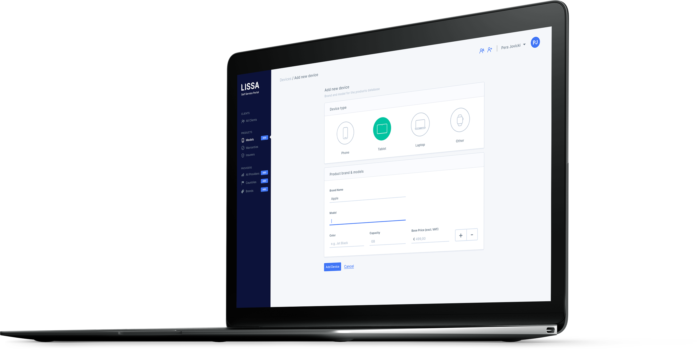
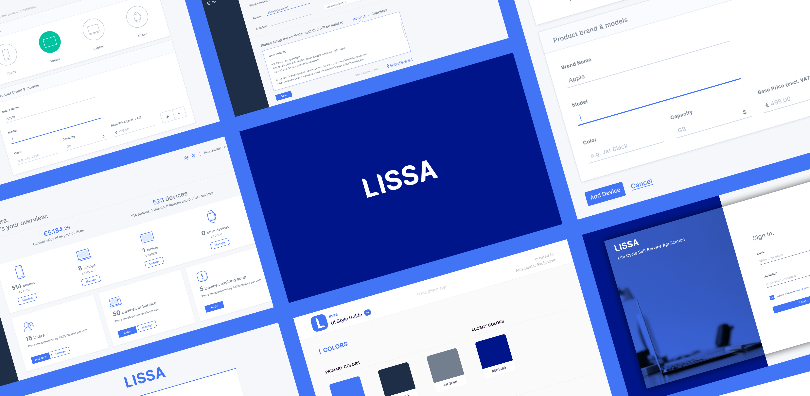
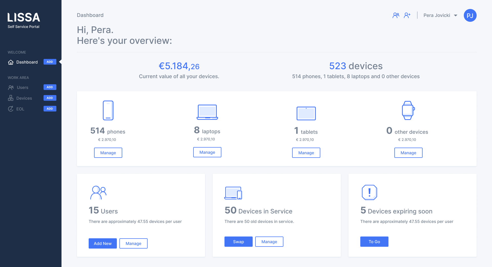
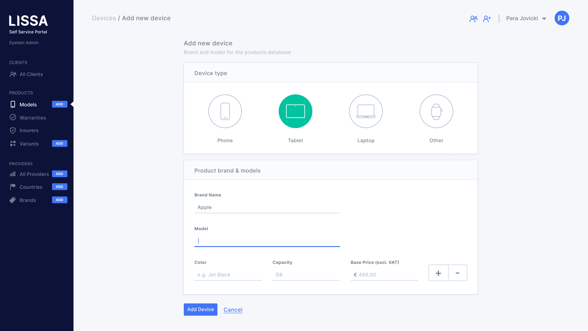
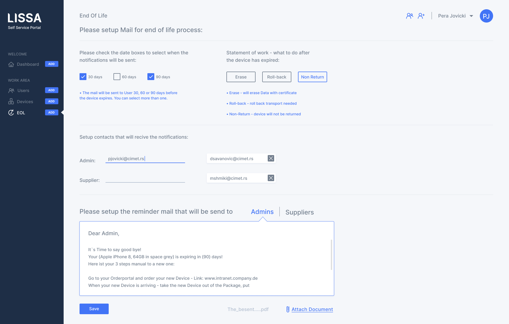
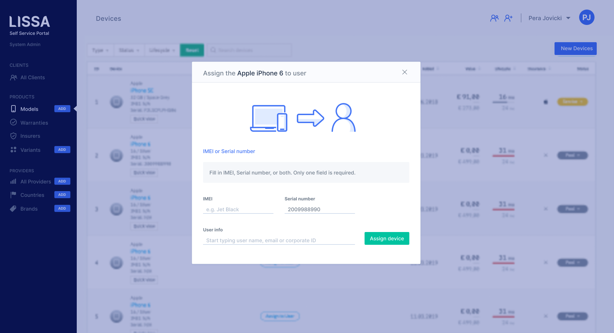
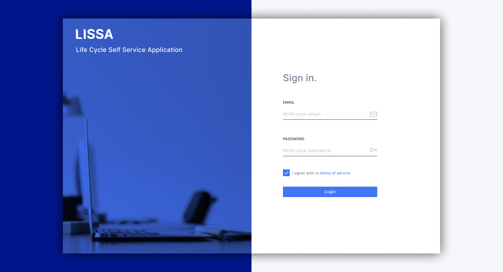
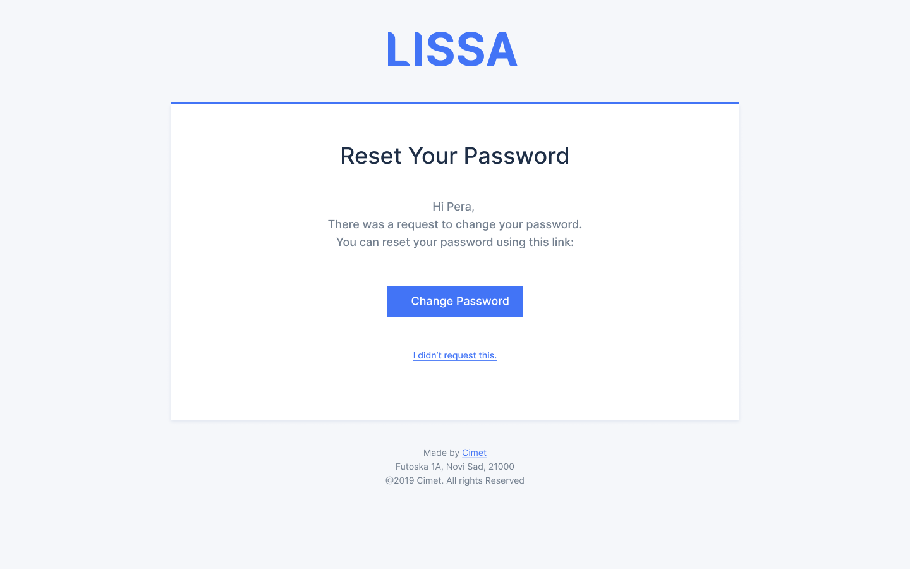
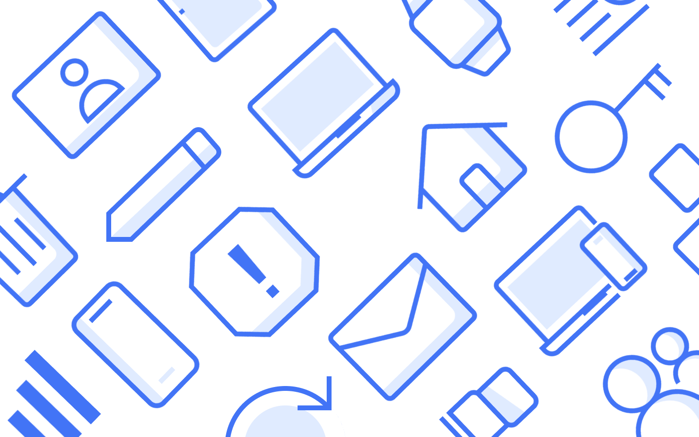
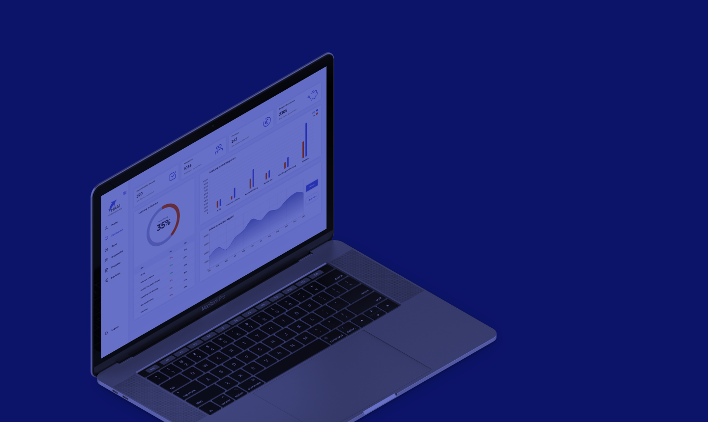

LISSA is the operating system for enterprise mobility services and Enterprise clients all over the world developed by Cimet. This was a large-scale project I was excited to work on as part of the company where I got to learn about product branding, dashboard design, icon design, etc.
Client: Cimet
Role: UX/UI Design, Visual Identity
Date: 2019
The acquirement of mobile devices has changed massively in recent years. Due to the development on the market that devices are not obtained from CAPEX but from OPEX - i.e. DaaS „Device as a Service“, you need an operating system that manages these devices.
The runtime and the value of the devices are important KPIs.
Swap management for defective devices, international distribution and
collection of devices up to certified removal should be carried out simply, and in accordance with GDPR.
With one click to a swap device or order for repairs and messages for
the next lifecycle is a small selection of what is covered with LISSA.
The solution saves customers a tremendous amount of time and they can work on
all devices in the company in an interdisciplinary manner.
Through the platform, the customers can handle their complete services at any time, in any country. With LISSA we organize all devices in the company and keep every process digitally up to date at all times.






Due to the complex requirements, we opted for a clear and user-friendly platform that can be accessed via a browser. I collaborated with frontend and backend developers to generate style guides and UI assets. Validated designs with stakeholders and participated in an Agile scrum team. We created a dedicated online style guide for developers.


One of the most enjoyable things was designing custom icons that were used throughout the application. This was an ongoing process and continued later with the new iterations.

